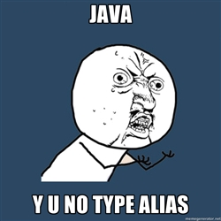

Getting Started
- Environment
- Hello World project
- Basic types
- Expressions
- Functions
- Object Orientation
Environment
Environment
Install Scala & SBT on Mac OS X
- SBT - Simple Built Tool
- Simialar to Maven, Leiningen (Clojure) and Gradle (Groovy)
- Also handles per project Scala version
brew install scala sbtA basic Scala console
neville@foobar:~$ scala Welcome to Scala version 2.10.4 (Java HotSpot(TM) 64-Bit Server VM, Java 1.7.0_55). Type in expressions to have them evaluated. Type :help for more information. scala>
Environment
Scala as a scripting language
#!/usr/bin/env scala
// hello.scala
object World {
def hello = "Hello"
}
println(World.hello)
neville@foobar:~$ scala hello.scala
Hello
neville@foobar:~$ chmod +x hello.scala
neville@foobar:~$ ./hello.scala # look mum, no compiling!
Hello
Environment
Global repository setting
~/.sbt/global.sbt (for SBT < 0.13)~/.sbt/0.13/global.sbt (for SBT >= 0.13)
resolvers ++= Seq(
"Local Maven Repository" at "file://" + Path.userHome.absolutePath + "/.m2/repository"
)
Override JVM memory flags
~/.sbtconfig
SBT_OPTS="-XX:+CMSClassUnloadingEnabled -XX:MaxPermSize=1024M"Environment
- Install IntelliJ IDEA (Community Edition is fine)
- Preferences → Plugins → Install JetBrain Plugins → Scala
sbt-idea (for IntelliJ IDEA < 13)
~/.sbt/plugins/build.sbt (for SBT < 0.13)~/.sbt/0.13/plugins/build.sbt (for SBT >= 0.13)
addSbtPlugin("com.github.mpeltonen" % "sbt-idea" % "1.5.2")Hello World Project
hello/project/build.properties
sbt.version=0.13.5
hello/build.sbt
organization := "com.spotify"
name := "hello"
version := "0.1.0" // com.spotify:hello_2.10-0.1.0.jar
scalaVersion := "2.10.4" // per project Scala version
libraryDependencies ++= Seq(
// Scala library, SBT will append language version
"org.scalanlp" %% "breeze" % "0.8.1", // breeze_2.10-0.8.1.jar
// Java library
"org.jblas" % "jblas" % "1.2.3", // jblas-1.2.3.jar
// Scala lbrary, scope = test
"org.specs2" %% "specs2" % "2.3.13" % "test" // specs2_2.10-2.3.13.jar
)
Hello World Project
hello/src/main/scala/com/spotify/hello/Hello.scala
package com.spotify.hello
import breeze.linalg.DenseVector // Scala library
import org.jblas.DoubleMatrix // Java library
object Hello {
def main(args: Array[String]) { // public static void main
println("Hello " + args.mkString(" "))
}
// DenseVector.dot(DenseVector) -> infix operator
def d1(): Double = DenseVector(0.1, 0.2) dot DenseVector(1.0, 2.0)
def vec(a: Double*) = new DoubleMatrix(a.toArray)
def d2(): Double = vec(0.1, 0.2) dot vec(1.0, 2.0) // infix operator
}
Hello World Project
hello/src/test/scala/com/spotify/hello/HelloTest.scala
package com.spotify.hello
import org.specs2.mutable._ // Specs2: Software specification for Scala
class HelloTest extends Specification {
"Hello.s1()" should {
"be 0.5" in {
Hello.s1() must_==(0.5)
}
}
"Hello.s2()" should {
"be 0.5" in {
Hello.s2() must_==(0.5)
}
}
}
Hello World Project
Run Forrest Run!
sbt compile
sbt run # run default main class without argument
sbt "run-main com.spotify.hello.Hello ARG ..."
Other useful SBT tasks
sbt clean
sbt test # run unit tests
sbt console # Scala console with project dependencies loaded
sbt package # generate JAR file
sbt assembly # JAR with bundled deps, requires sbt-assembly plugin
Hello World Project
Continuous mode (for compile/test)
Executes task when source changes detectedneville@foobar hello $ sbt [info] Loading global plugins from /Users/neville/.sbt/0.13/plugins [info] Set current project to hello (in build file:/Users/neville/hello/) > ~ compile [success] Total time: 1 s, completed Jan 22, 2014 4:13:05 AM 1. Waiting for source changes... (press enter to interrupt)
Hello World Project
IntelliJ IDEA >= 13 → "Open Project" directly
< 13 → sbt-idea plugin
neville@foobar hello $ sbt gen-idea [info] Loading global plugins from /Users/neville/.sbt/0.13/plugins [info] Set current project to hello (in build file:/Users/neville/hello/) [info] Creating IDEA module for project 'hello' ... [info] Created /Users/neville/hello/.idea/IdeaProject.iml [info] Created /Users/neville/hello/.idea [info] Created /Users/neville/hello/.idea_modules/hello.iml [info] Created /Users/neville/hello/.idea_modules/hello-build.iml
- File → Open → [navigate to project root] → Open
- Need to re-generate every time build.sbt changes
Hello World Project
IntelliJ is your best friend
- ⌘ + hover - inspect code
- ⌘ + click - navigate to code
- alt + enter - show actions
- ⌘ + ⇧ + o - navigate to file
- ctrl + j - show javadoc/scaladoc
- Reference card for Mac and Windows/Linux
Basic Types
Java counterparts
- Primitives
Int,Double,Boolean, etc. - Same as Java
int,double,boolean, etc. String,Arraysame class as in Java
scala> val i: Int = 1
i: Int = 1
scala> val s: String = "Hello"
s: String = Hello
scala> val b: Boolean = true
b: Boolean = true
Basic Types
Collections
scala> val a1: Array[Double] = Array[Double](1.0, 2.0, 3.0)
a1: Array[Double] = Array(1.0, 2.0, 3.0)
scala> val a2 = Array(1.0, 2.0, 3.0) // type inference
a2: Array[Double] = Array(1.0, 2.0, 3.0)
scala> a1(0)
res1: Double = 1.0
scala> val a2 = Array(1.5, 2, "Hello") // more type inference
a2: Array[Any] = Array(1.5, 2, Hello) // Any == Object in Java
Basic Types
Immutability
- Key motivation in FP
- States are hard to reason, test and error-prone
- Copy and transform data with pure functions
valis immutable (cannot be reassigned),varis not- Most Scala collections are immutable by default
- Good fit - HDFS, log streams, etc. also immutable
Basic Types
Tuples
- Sequence of items, each with its own type
- Fixed number (max 22), immutable
- Implimented as Java templates
Tuple1[T1], Tuple2[T1, T2], Tuple3[T1, T2, T3], ...
scala> val a = (1, 2.5, "three")
a: (Int, Double, String) = (1,2.5,three)
scala> a._1
res0: Int = 1
scala> a._2
res1: Double = 2.5
scala> a._3
res2: String = three
Pair<K,V>, Tuple3<V1,V2,V3>, Tuple4<V1,V2,V3,V4>, TupleN
Basic Types
Tuple decomposition
Think like lightweight, type safe struct
scala> val t = (1, "a", (Array(1.0, 2.0), true))
t: (Int, String, (Array[Double], Boolean)) = (1,a,(Array(1.0, 2.0),true))
scala> val (i, s, (a, b)) = t
i: Int = 1
s: String = three
a: Array[Double] = Array(1.0, 2.0)
b: Boolean = true
Basic Types
Some or None
Both sub-classes of Option[T]
val nothing: Option[String] = Option(null) // None
val nil = None
val some = Some("data") // Option[String]
val callMe: Option[String] = nil
callMe.isDefined
callMe.getOrElse("bye")
val maybe: Option[String] = some
maybe.isDefined
maybe.getOrElse("what?")
Basic Types
Type gymnastics
import scala.collection.SortedSet
val a = Set(1, 2)
a.getClass // Set[Int] ...
val b = SortedSet(1, 2) // sub-class of Set
b.getClass // SortedSet[Int] ...
a.isInstanceOf[Set[Int]] // true
b.isInstanceOf[Set[Int]] // also true
a.isInstanceOf[SortedSet[Int]] // false, default Set is not sorted
b.isInstanceOf[SortedSet[Int]] // true
// cast up class hierarchy
b.asInstanceOf[Set[Int]] // SortedSet is also Set
b.asInstanceOf[Iterable[Int]] // most collections are iterable
Basic Types
Type aliases
List<ListenableFuture<Map<String, Metadata>>>

class Track
class ListenableFuture[T]
type TrackFuture = ListenableFuture[Map[String, Track]]
Basic Types
Exercises
- What's the class of
("pi" -> 3.14),("e", 2.72),
and("one", 2, 3.0) - How do you create a tuple of one element?
- What's the class of
Some("one"), andNone - Find their common super class with
isInstanceOf[]
Expressions
Think in expressions, not statements
// use :paste mode in Scala console
val volume = 11
var result = ""
if (volume >= 11)
result = "loud"
else
result = "suck"
val a = Array(1.0, 2.0, 3.0)
for (i <- 0 until a.length) a(i) *= 10
// if/else evaluates to "passed"/"failed"
val result = if (volume >= 11) "loud" else "suck"
val a = Array(1.0, 2.0, 3.0)
a.map(_ * 10.0) // more on this later
Expressions
Loops are expressions too
for (i <- 0 until 10) yield i * i
for (i <- 0 until 10 if i % 2 == 0) yield i
for (i <- 1 to 10;
j <- i to 10
if j % i == 0) yield (i, j)
// no C/C++/Java style - for (int i = 0; i < 10; i++) { ... }
// i is mutable and loop body is side effect, impure
// No break (possible but ugly) or continue, and you do not need them
For loop vs. while loop performance
SI-1138 Optimize simple for loops
Expressions
So are try/catch/finally blocks
def safeGet(a: Array[Int], n: Int): Int = try {
a(n)
} catch {
case e: ArrayIndexOutOfBoundsException => 0
} finally {
println(s"safeGet($n)") // string interpolation
}
val a = Array(1, 2, 3)
safeGet(a, 2)
safeGet(a, 3)
Expressions
Pattern matching
Way more powerful than switch/case or if/else if/else
val color = "black"
val noun = color match {
case "red" => "sox"
case "blue" => "sky"
case "yellow" => "cab"
case "green" => "bay"
case "black" => "metal"
case _ => "crap" // wildcard
}
println(color + " " + noun)
Expressions
Exercises
- Find multiples of 3 below 20 with
for/yield - Find sign (+/-) of
math.sinfor integers between [0, 10) - Match integers [1, 7] to "Mon", "Tue", ...
Functions
Lots of things optional
def addOne(m: Int): Int = m + 1 // no {}
def factorial(m: Int) = { // no return type
var f = 1
for (i <- 1 to m) f *= i // not idiomatic, more later
f // last expression is return value
}
// java.lang.* (including System) imported by default
def t = System.currentTimeMillis // no (), either declaring or invoking
def hello(name: String) { // no =, return type Unit (void in C/C++)
println("Hello " + name)
}
- {} around one-liner body
- Return type, but recommended for complex cases
returnstatement- () for parameter-less functions
Functions
Optional and named arguments
def trainSuperFancyUberAweomeModel(
data: Array[Array[Double]],
rank: Int,
alpha: Double = 0.1,
beta: Double = 0.2,
lambda: Double = 0.5) = {
42
}
val data = Array(Array(1.0))
trainSuperFancyUberAweomeModel(data, 10)
trainSuperFancyUberAweomeModel(data, 10, 0.3)
trainSuperFancyUberAweomeModel(data, 10, beta=0.9)
trainSuperFancyUberAweomeModel(rank=5, data=null)
Functions
Variable arguments
def plus(l: Int*) = l.sum
plus()
plus(1)
plus(1, 2)
plus(1, 2, 3)
plus(Array(1, 2, 3): _*)
Functions
Anonymous functions - a.k.a. λ
Key component of Scala or any FP languageval addOne = (x: Int) => x + 1 // function is data
addOne(1)
List(1, 2, 3).map(addOne)
List(1, 2, 3).map((x: Int) => x + 1)
List(1, 2, 3).map(x => x + 1)
List(1, 2, 3).map(_ + 1)
// commonly seen in Scalding/Spark
List((1, 2), (2, 3), (3, 4)).map { t => // t is (Int, Int)
val (a, b) = t // tuple decomposition
val r = a + b
println(s"$a + $b = $r") // side-effect
r // return value
} // {} and () interchangeable but () recommended for one-liners
Functions
High order functions
def applyFn(x: Int, fn: Int => Int) = fn(x)
applyFn(10, _ + 10) // x + 10
def applyFn2(x: Int, y: Int, fn2: (Int, Int) => Int) = fn2(x, y)
applyFn2(10, 20, _ + _) // x + y
def applyFn3(x: Int, y: Int, z: Int, fn3: (Int, Int, Int) => Int) =
fn3(x, y, z)
applyFn3(10, 20, 30, _ + _ + _) // x + y + z
Functions
Currying
 Named after Haskell Brooks Curry
Named after Haskell Brooks Curry
Functions
Curried functions
def add(m: Int, n: Int) = m + n // function (Int, Int) => Int
// partially apply one argument
val add2 = add(2, _: Int) // new function Int => Int
add2(3)
def multiply(m: Int)(n: Int): Int = m * n // function (Int)(Int) => Int
multiply(2)(3)
def multiplyByTwo = multiply(2)(_) // new function Int => Int
multiplyByTwo(3)
map('inFields -> 'outFields)(function)
Also fold(z)(function) & mapReduceMap(mapFn1)(reduceFn)(mapFn2)
That's why Haskell function signatures look like Int -> Int -> Int
Functions
Exercises
- Write a recursive function for \(x^n\) with
n: Int - Make sure it supports negative
n - Curry it to \(x^2\) and \(x^3\), e.g.
square(x: Double): Double
cube(x: Double): Double
Object Orientation
Packages
// AwesomeAlgorithm.scala
package com.spotify.prism
import com.spotify.common._ // wildcard
import scala.io.{Codec, Source} // import many
// rename Java collections to avoid collision
import java.util.{List => JList, Map => JMap}
class AwesomeAlgorithm { // com.spotify.prism.AwesomeAlgorithm
def compute = 42
}
Object Orientation
Objects
Basically singletons with static methods
object ProblemFactory {
private var count = 0 // private mutable member
def newProblem() = { // static method
count += 1
count * scala.util.Random.nextDouble
}
}
ProblemFactory.newProblem
Object Orientation
Apply method
object RandomDouble {
def apply() = scala.util.Random.nextDouble
}
RandomDouble() // syntactic sugar for RandomDouble.apply()
// classes can have apply member methods too
val v = Vector(10, 20, 30)
v.apply(1)
v(1) // -> 20, same as above
Object Orientation
Constructors
class Universe { // default constructor with no argument
val answer = 42 // public immutable member
}
new Universe().answer
class Square(x: Double) { // constructor with one argument
// constructor body {
val size = x * x
// }
}
new Square(10).size
new Square(10).x // error: value x is not a member of Square
Object Orientation
More constructors
// x and y are public immutable members
class Vector(val x: Double, val y: Double) { // default constructor
val magnitude = math.sqrt(x * x + y * y)
def this() = this(0.0, 0.0) // constructor overloading
}
val v = new Vector(2, 3)
(v.x, v.y, v.magnitude)
val v = new Vector()
(v.x, v.y, v.magnitude)
Object Orientation
Companion objects
Tired of typingnew SomeObject(arg1, arg2)?
class Vector(val x: Double, val y: Double) {
val magnitude = math.sqrt(x * x + y * y)
println("|($x, $y)| = $magnitude")
}
object Vector {
def apply(x: Double = 0.0, y: Double = 0.0) = new Vector(x, y)
}
Vector()
Vector(1.0, 2.0)
Object Orientation
Functions are objects
// Function1[T1, R], Function2[T1, T2, R], ...
// Function22[T1, T2, ... T22, R]
class AddOne extends Function1[Int, Double] {
def apply(x: Int): Double = x + 1.0
}
val plusOne = new AddOne()
plusOne(10)
// shorthand
class AddOne extends (Int => Double) {
def apply(x: Int): Double = x + 1.0
}
// even shorter
val plusOne: Int => Double = _ + 1.0
plusOne(10)
Object Orientation
Functions in Java
Function<Integer, Double> addOne = new Function<Integer, Double>() {
@Nullable
@Override
public Double apply(@Nullable Integer x) {
if (x == null) return 1.0;
return x + 1.0;
}
};
addOne.apply(10);
DoFn<Integer, Double> addOne = new DoFn<Integer, Double>() { // Crunch
@Override
public void process(Integer x, Emitter<Double> emitter) {
emitter.emit(x + 1.0);
}
};
Object Orientation
Case classes
// public immutable fields, toString and apply method for free
case class Metal(name: String, country: String, femaleSinger: Boolean = false,
violin: Boolean = false, flameThrower: Boolean = false)
val inflames = Metal("In Flames", "SE") // apply, no need for new
println(inflames) // free toString
val epica = Metal("Epica", "NL", true)
val delain = epica.copy(name="Delain") // free copy constructor
val korpiklaani = Metal("Korpiklaani", "FI", violin=true)
val rammstein = Metal("Rammstein", "DE", flameThrower=true)
def classify(m: Metal) = m match {
case Metal(_, "SE", false, false, false) => "melodic death"
case Metal(_, "FI", false, true, _) => "folk"
case Metal(_, "NL", true, _, _) => "goth"
case Metal(_, _, _, _, true) => "Tanz Metal"
case _ => "unknown"
}
Object Orientation
Exercises
- Write a class
Timewith hour, minute, and second - Add a secondOfDay member in the constructor
- An optional non-member argument
AMto the constructor - Create
MidnightandNooncompanion objects withapply()
That's It
Further reading
- Inheritance
- Abstract classes and methods
- Visibility control
- Traits
- Call by name